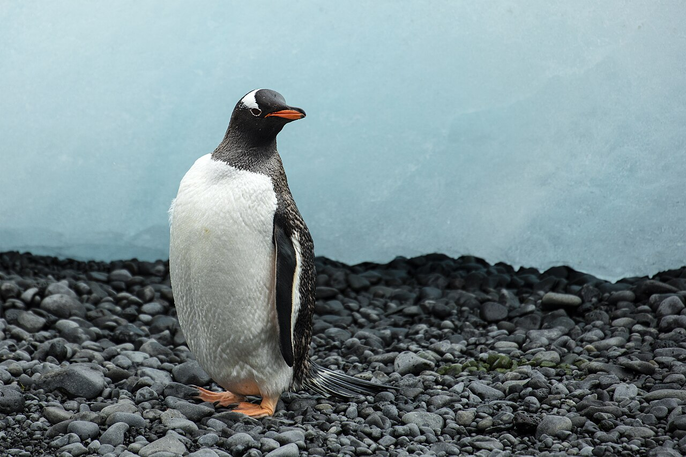
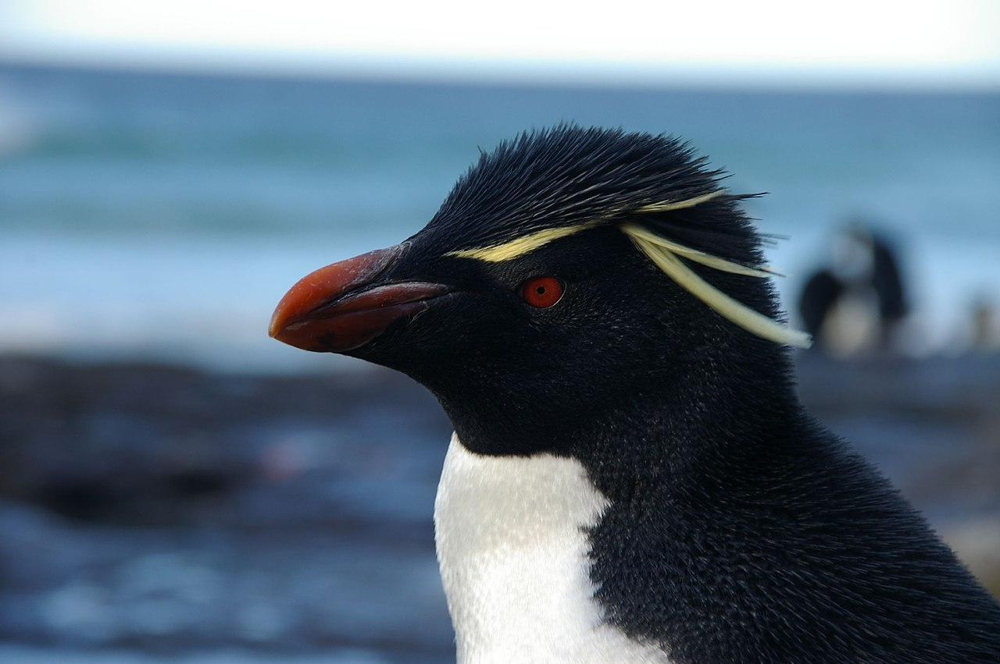

The coolest animal in the world!
I cannot stress enough just how cool this animnall really is. I mean, just look at them.

Why penguins are the coolest animal in the world:
- They can slide on their stomachs
- They can swim
- They eat fish
- They do all of this while being birds
Here are some more cool images of penguins for your viewing pleasure
This is a gentoo penguin, which I like because they have a neat name
This is a southern rockhopper penguin, one of my favorites because they look quite silly but also feisty
This should give you an idea of how varied penguins can be, with there being a lot more species of them out there than just emperors. If you would like to see more penguins or learn more about them you can do so on Wikipedia